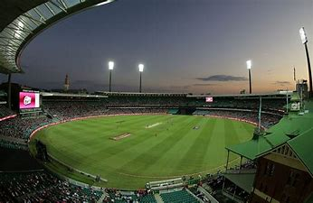

<div class="container">
    <div class="card">
        <div class="card-body">
            
    <div class="row">
        <div class="col sm-6">
            <h5>The Gabba</h5>
            
         </div>
         <div class="col sm-6">
             <h4>The Gabba</h4>
             <p class="text">Major sports Stadium</p>
             <p>The Brisbane Cricket Ground, commonly known as the Gabba, is a 
                 major sports stadium in Brisbane, the capital of Queensland, Australia. 
                 The nickname Gabba derives from the suburb of Woolloongabba, in which it is located. 
                 Over the years, the Gabba has hosted athletics, Australian rules football, baseball, 
                 concerts, cricket, cycling, rugby league, rugby union, Association football and pony and
                  greyhound racing. At present, it serves as the home ground for the Queensland Bulls in
                   domestic cricket, the Brisbane Heat of the Big Bash League and Women's Big Bash League,
                    and the Brisbane Lions of the Australian Football League. The Gabba will be the 
                    centrepiece of the
                  2032 Summer Olympics and will be upgraded for the games.</p>
                <p><b>Address</b>: Gate 7, Vulture Street,Woolloongabba,Queensland 4102</p>
                <p><b>Phone</b>: 1300 843 422</p>
                <p><b>OPened</b>: 1895</p>
                <p><b>Capacity</b>: 42,000</p>
         </div>
     </div>
     <div class="row">
         <div class="col sm-6">
             <h4>Melburne Cricket Ground</h4>
             <p class="text">Stadium</p>
             <p>The Melbourne Cricket Ground, also known locally as "The G", is an Australian sports
                  stadium located in Yarra Park, Melbourne, Victoria. Founded and managed by the Melbourne
                   Cricket Club, it is the largest stadium in the Southern Hemisphere, the 11th largest 
                   globally, and the second largest cricket ground by capacity. The MCG is within walking
                    distance of the city centre and is served by Richmond and Jolimont railway stations,
                     as well as the route 70 tram. It is adjacent to Melbourne Park and is part of the
                      Melbourne Sports and Entertainment Precinct.
                <p><b>Address</b>: Brunton Avenue,Richmond,Victoria 3002</p>
                <p><b>Opened</b>:1853</p>
                <p><b>Capacity</b>: 1,00,000</p>
             
         </div>
         <div class="col sm-6">
             
         </div>
     </div>
     <div class="row">
         <div class="col sm-6">
             
         </div>
         <div class="col sm-6">
             <h4>Sydney Cricket Stadium</h4>
             <p class="text">Sports Stadium</p>
             <p>The Sydney Cricket Ground is a sports stadium in Sydney, Australia. It is used for Test, 
                 One Day International and Twenty20 cricket, as well as Australian rules football, rugby 
                 league football, rugby union, and association football. It is the home ground for the New 
                 South Wales Blues cricket team, the Sydney Sixers of the Big Bash League and the Sydney 
                 Swans of the Australian Football League. It is also the temporary home of the Sydney 
                 Roosters of the National Rugby League and the NSW Waratahs of Super Rugby, during the 
                 redevelopment of the Sydney Football Stadium. It is owned and operated by the Sydney Cricket
                  Ground Trust, who also hold responsibility for the Sydney
                  Football Stadium which is currently being redeveloped by the NSW Government.</p>
            <p><b>Address</b>: Level 2, Sheridan Building Moore Park Road, Moore Park, New South Wales 2021</p>
            <p><b>Phone</b>: +61293606601</p>
            <p><b>Opened</b>: 1848</p>
            <p><b>Capacity</b>: 48,600</p>
         </div>
     </div>
     </div>
     </div>
</div>  
